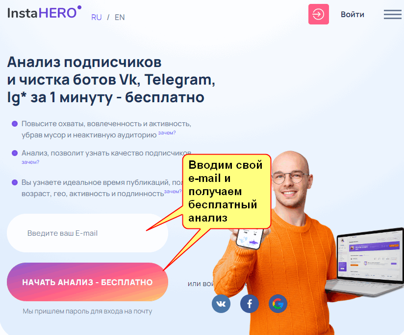
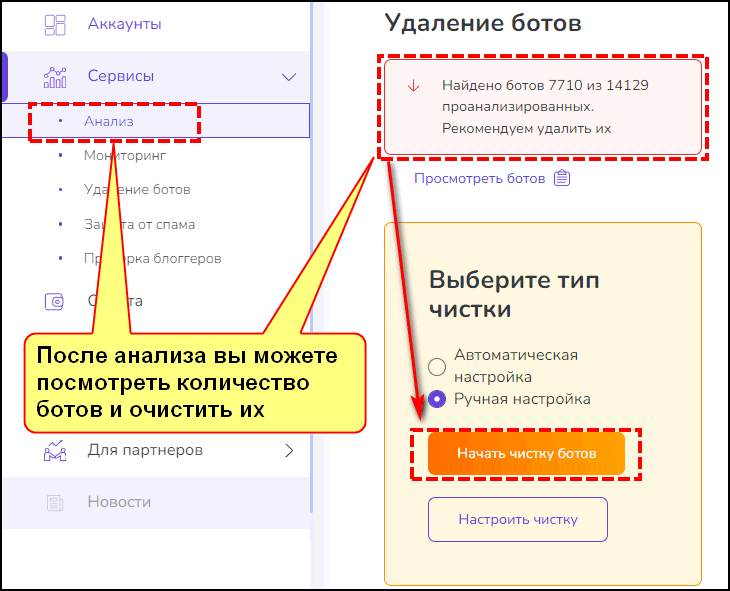
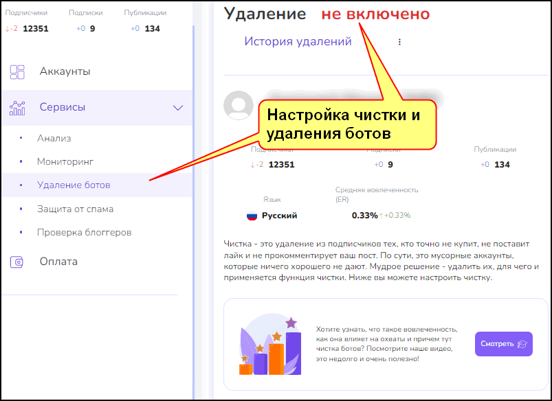
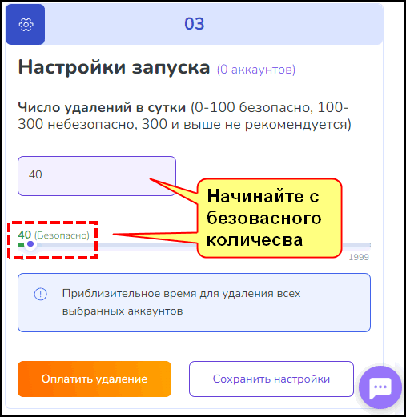
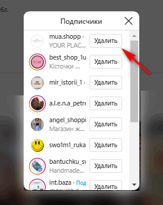
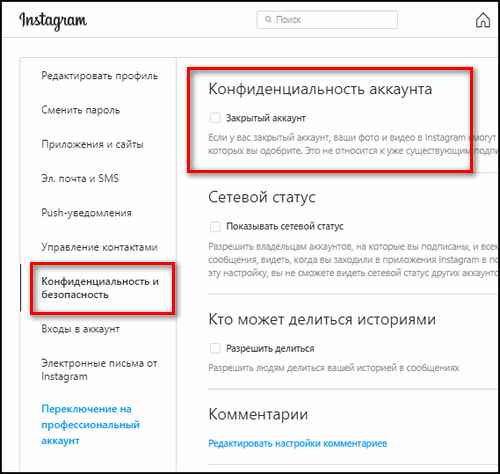

ТОП 11 способов удалить ботов в Инстаграм и очистить свой профиль

Удалить ботов в Инстаграме* возможно через сервисы или вручную, проверив страницы подписчиков. Первый вариант прост в применении, но автор блога может столкнуться с блокировкой. Второй – затратен по времени и требует базовых знаний в очистке фейков.
10 лучших сервисов для удаления ботов в Instagram*
В основном, для очистки и удаления ботов из подписчиков в Инстаграм* существуют только онлайн сервисы (приложений мало). Поэтому владельцу аккаунта придется перейти в веб-версию, чтобы быстро подключить профиль из Инстаграма*. ТОП-10 сервисов:
- Topnakrutok. Есть пробный период, но нужно оформить подписку, чтобы получить доступ к постоянному функционалу: на один месяц или год. Помимо очистки страницы от ботов, предлагает постоянный мониторинг и наблюдение за конкурентами. (Работаю с платным тарифом, но есть и урезанный бесплатный анализ для тестов).
- SpamGuard. Сканирование и очистка аккаунта от ботов и нежелательных аккаунтов, которые не проявляют активности и портят вам статистику. Умное сканирование. Высокая точность выявления ботов и неактивных подписчиков. Алгоритмы учитывают до 10 переменных перед очисткой ваших подписчиков. Куча параметров для фильтрации. (Использую при работе со своими и клиентскими блогами).
- FakeLikeInfo. Бесплатные проверки доступны для аккаунтов с 500 подписчиками, если больше – нужно оформлять подписку. Чтобы воспользоваться – необязательно регистрироваться, проверяет по последним 12 публикациям.
- Getpapabot. Телеграм-бот, работает по принципу: чем больше подписчиков, тем выше цена подписки. Стандартная – от 200 рублей. Выгружает полную статистику по Инстаграм* профилю и анализирует состав аудитории.
- SmartMetrics. Отслеживает активность аудитории, выводит данные о публикациях. Подписка от 9$ в месяц и зависит от количества аккаунтов, которые нужно подключить.
- Iconosquare. Пробный период – 14 дней. Собирает статистику по профилю, предлагает постоянный мониторинг.
- JagaJam Suite. Пользователь платит только за добавленные страницы 200 рублей. Сервис оценивает эффективность контента, добавляет информацию о подписчиках и выводит графики активности.
- Keyhole. Профессиональный инструмент для работы с подписками и аналитикой аккаунта. Есть пробный период в семь дней, далее – подписка в 199$ в месяц. Предлагает два разных пакета: для блогеров, владельцев личных страниц и брендов.
- minter.io. Направленность на компании и бренды, меньше функций для работы с блогерами. Зарубежный сервис анализирует несколько социальных сетей ежедневно. Подписка и чистка стоит 9$ в месяц, а пробный период в 2 недели.
- instaplus.pro. Есть возможность скачать приложение и пользоваться быстрее и удобнее чем через браузер.
Англоязычные сервисы масштабны в функционале, но русскоязычными пользоваться проще. Три последних в ТОПе доступны только на английском, но обладая базовыми знаниями языка – проблем с регистрацией и работой возникнуть не должно.
Удаление ботов в Инстаграм* на примере InstaHero
Одним из ведущих сервисов на RU рынке по очистке ботов в Instagram* является InstaHero, как по качеству предоставляемых услуг, так и по цене. Чтобы проверить и удалить ботовые аккаунты:
- Переходим на официальный сайт
InstaHeroна данный момент закрыт и не работает выбираем бесплатный анализ.
- После проведения анализа, вы увидите статистику по ботам в вашем аккаунте, которых можно удалить при помощи InstaHero.

- Далее нужно настроить очистку при помощи параметров, лучше всего начинать с плавного удаления ненужных подписчиков и ботов.

- Не торопитесь удалять сразу всех, начинайте плавно, можно задать фильтры, с помощью которых вы не превысите лимиты на удаление.

Поиск и удаление ботов вручную
Поиск и избавление от ботов можно провести самостоятельно, оценив список подписчиков. Особенности фейковых аккаунтов:
- часто отсутствует аватарка и нет описания;
- сгенерированный ник. Он не выполнен в виде имени или хотя бы складного слова;
- отсутствие публикаций;
- больше подписок, чем подписчиков.
Это может быть показателем и просто скрытного пользователя, но такие не входят в список потенциальной аудитории и клиентской базы.
Как самостоятельно очистить список подписчиков:
- Зайти в Инстаграм* – перейти во вкладку: «Подписчики».
- Рядом с пустыми страницами нажимать: «Удалить».

- Обновить страницу и продолжить очистку.
Но в таком случае обновляться придется после каждого 10 бота. В Инстаграме* также есть ограничения, которые зависят от количество одинаковых действий. То есть, если владелец в Инстаграм* аккаунте за день удалил более 100 человек – это может быть рассмотрено, как автоматическое действие и профиль будет заблокирован.
Что делать, если на вас идет атака ботов
Почистить ботов в Инстаграме* не удастся, если была поставлена накрутка. У такого способа продвижения есть недостаток: большинство добавившихся не будут активной аудиторией, а также повлияют на рекламу страницы по региону. Но если владелец не ставил накрутку, а это сделали конкуренты:
- временно сделать аккаунт «закрытым». В таком случае потеряется статистика, но владелец сможет сам контролировать: кого добавлять в подписчики, а кого отклонить;
- очистить аккаунт через SpamGuard.
У первого способа есть преимущество: ранее подписанные на страницу останутся, а боты – не будут допущены к подписке. Как отказаться от новой аудитории:
- Зайти в Инстаграм* – Настройки.
- Конфиденциальность – Закрытая страница.

- Перейти к разделу: «Уведомления» - Заявки на подписку.
- Нажать: «Отказать» рядом с никнеймом.
В этом разделе нет ограничений, поэтому владелец может удалять всех новых добавившихся. А отписаться от старых и ненужных подписок можно с помощью программы в автоматическом режиме, как это сделать читайте на нашем сайте.
Зачем чистить ботов и что это даст
Очистка ботов в Инстаграме* – это процедура, которая поможет владельцу продвигать публикации в рекомендациях, что в свою очередь нарастит живую аудиторию, которая придет на смену мусорным и фейковым аккаунтам. Если на странице много фейков:
- публикации не продвигаются по геолокации;
- новые подписчики не увидят записи;
- невозможно подать заявку на рекламу;
- в статистике нет точных данных.
Очистив профиль, владелец должен за ним постоянно следить и удалять ботов периодически. Это необходимо, чтобы не возникало проблем с атакой ботов в дальнейшем. Определить, что на страницу организована атака возможно по количеству новых добавившихся без аватарок и описания.
Лимиты на удаление: чистим аккуратно, избегая блокировки
Сервисы для чистки ботов в Инстаграме* учитывают лимиты и поэтому в день нельзя убрать свыше 300 подписчиков. Удаление также зависит от количества последователей, подписанных на учетную запись. Есть отдельные лимиты для новых профилей и старых:
- на новом профиле: не более 150 блокировок в час. Перерыв – 2 часа;
- на старом – не более 200 удалений, перерыв – 2 часа.
Есть две формы удаления ботов из подписчиков: через стандартную очистку или блокировку. На второй срабатывает механизм Инстаграма*, который запрещает за день блокировать свыше 100 человек. К тому же, этот способ неудобен: нужно переходить к каждому на страницу и выбирать дополнительное меню.
При превышении лимитов появится уведомление: «Действие заблокировано». Пользователю нужно подождать 24 часа, чтобы восстановились функции. Если владелец учетной записи продолжит удалять или совершать заблокированное действие – его аккаунт может попасть в блокировку на трое суток. При регулярно превышении – перманентный (теневой бан) и удаление страницы.